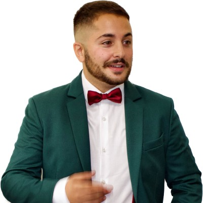

Giovanni Pettorru, Ph.D.
Dep. of Electrical and Electronic Eng.
DIEE, University of Cagliari, Italy
Via Marengo, 3 - 09123 Cagliari
Email: giovanni.pettorru@unica.it
Download CV
Biography
Giovanni Pettorru received a B.Sc. degree in Electrical and Electronic Engineering from the University of Cagliari in 2020, with a thesis on the Implementation of a Parking Occupancy Detection System Based on Magnetometer Sensor. In 2022, he earned a Master's Degree in Internet Engineering from the same university, presenting a thesis titled Secure and Low-Latency Communications Based on WebSocket and QUIC in the Internet of Things Scenario.
In February 2026, he earned his Ph.D. in Electronic and Computer Engineering from the University of Cagliari, within the Department of Electrical and Electronic Engineering (DIEE/UdR CNIT). His doctoral thesis, titled Energy-Efficient and Trustworthy Location-Based Services for Next-Generation IoT, focused on network security and GPS-free localization strategies in green IoT environments.
Giovanni is an active member of IEEE. He has demonstrated exceptional communication skills by placing third in the 1st Three-Minute Thesis (3MT) competition at IEEE ICC 2023 and participating as one of the 15 finalists in the Four-Minute Thesis (4MT) at IEEE Globecom 2024 and 2025. These competitions challenge researchers to convey their work effectively to a non-specialist audience in just a few minutes. His strong performance in these contests highlights his ability to communicate complex ideas clearly and precisely. Giovanni has also contributed to the scientific community by serving as a PC member at the AQ-IoT 2023 conference.
He is currently the Web and Social Media Chair for the IEEE ComSoc Italy Chapter (2026–Present) and served as a member of the Organizing Committee for IEEE MeditCom 2026.
Giovanni made significant contributions to the POSIDONIA project (POSition Information with Digital twin Offloading in trustworthy Next-generation Internet Applications). Within the Next-Generation Internet (NGI) vision, this project tackles green and human-centric network design across the Fog-Edge-Cloud continuum. His work focuses on creating a distributed architecture for reliable GPS-free localization to support Location-Based Services (LBS) in Internet of Things (IoT) applications.
This strong technological foundation fueled his entrepreneurial vision, starting with Agricultural Geolocation and Resource Optimization (AGROS), a system designed to support agricultural decision-making through location-based services (LBS). Built upon the core pillars of the POSIDONIA project, AGROS earned an award from the University of Cagliari (e.INS Project) and achieved a top 10 finish in the Start Cup 2024 Sardegna competition. The project was subsequently recognized as one of the top 10 ideas in the AgriFuture program (Sardegna Ricerche), receiving dedicated support for market validation.
His commitment to innovation continued at the Start Cup 2025, where the project Location-based Emergency Notification System (LENS) also achieved a top 10 finish and received the "Climate Change" special mention for its innovative approach to detecting extreme natural events. Most recently, in early 2026, his project GreenShield was selected for the SERICS - Lab2Bay program. This achievement granted him entry into an exclusive acceleration path in Silicon Valley at the INNOVIT hub, aiming to validate his resource-aware security solutions within the US market.
Giovanni Pettorru ha conseguito la Laurea Triennale in Ingegneria Elettrica ed Elettronica presso l'Università di Cagliari nel 2020, con una tesi sull'Implementazione di un sistema di rilevamento dell'occupazione dei parcheggi basato su sensori magnetometrici. Nel 2022, ha ottenuto la Laurea Magistrale in Internet Engineering presso lo stesso ateneo, discutendo una tesi dal titolo Comunicazioni sicure e a bassa latenza basate su WebSocket e QUIC nello scenario Internet of Things.
Nel febbraio 2026, ha conseguito il Dottorato di ricerca in Ingegneria Elettronica e Informatica presso l'Università di Cagliari, all'interno del Dipartimento di Ingegneria Elettrica ed Elettronica (DIEE/UdR CNIT). La sua tesi di dottorato, intitolata Energy-Efficient and Trustworthy Location-Based Services for Next-Generation IoT, si è focalizzata sulla sicurezza di rete e sulle strategie di localizzazione GPS-free in ambienti IoT eco-sostenibili.
Giovanni è un membro attivo dell'IEEE. Ha dimostrato eccezionali doti comunicative classificandosi al terzo posto nella prima competizione "Three-Minute Thesis" (3MT) all'IEEE ICC 2023 e partecipando come uno dei 15 finalisti alla "Four-Minute Thesis" (4MT) presso IEEE Globecom 2024 e 2025. Queste competizioni sfidano i ricercatori a trasmettere efficacemente il proprio lavoro a un pubblico non specialistico in pochi minuti. Le sue ottime prestazioni in questi contest sottolineano la sua capacità di comunicare idee complesse in modo chiaro e preciso. Giovanni ha inoltre contribuito alla comunità scientifica servendo come membro del comitato di programma (PC member) alla conferenza AQ-IoT 2023.
Attualmente ricopre il ruolo di Web and Social Media Chair per l'IEEE ComSoc Italy Chapter (2026–Presente) ed è stato membro del Comitato Organizzativo di IEEE MeditCom 2026.
Giovanni ha fornito contributi significativi al progetto POSIDONIA (POSition Information with Digital twin Offloading in trustworthy Next-generation Internet Applications). All'interno della visione "Next-Generation Internet" (NGI), questo progetto affronta la progettazione di reti green e antropocentriche attraverso il continuum Fog-Edge-Cloud. Il suo lavoro si concentra sulla creazione di un'architettura distribuita per una localizzazione GPS-free affidabile a supporto dei servizi basati sulla posizione (LBS) nelle applicazioni Internet of Things (IoT).
Questa solida base tecnologica ha alimentato la sua visione imprenditoriale, a partire da Agricultural Geolocation and Resource Optimization (AGROS), un sistema progettato per supportare il processo decisionale in agricoltura attraverso i Location-Based Services (LBS). Basato sui pilastri fondamentali del progetto POSIDONIA, AGROS ha vinto un premio dall'Università di Cagliari (Progetto e.INS) e si è classificato tra i primi 10 nella competizione Start Cup Sardegna 2024. Il progetto è stato successivamente riconosciuto come una delle migliori 10 idee nel programma AgriFuture (Sardegna Ricerche), ricevendo supporto dedicato per la validazione del mercato.
Il suo impegno verso l'innovazione è continuato alla Start Cup 2025, dove il progetto Location-based Emergency Notification System (LENS) ha ottenuto un altro posizionamento in top 10 e ha ricevuto la menzione speciale "Climate Change" per il suo approccio innovativo nel rilevamento di eventi naturali estremi. Più di recente, all'inizio del 2026, il suo progetto GreenShield è stato selezionato per il programma SERICS - Lab2Bay. Questo traguardo gli ha permesso di accedere a un esclusivo percorso di accelerazione nella Silicon Valley presso l'hub INNOVIT, con l'obiettivo di validare le sue soluzioni di sicurezza attente alle risorse (resource-aware) all'interno del mercato statunitense.
Giovanni Pettorru a obtenu sa licence (B.Sc.) in Génie Électrique et Électronique à l'Université de Cagliari en 2020, con une thèse sur l'Implémentation d'un système de détection d'occupation de parking basé sur des capteurs magnétométriques. En 2022, il a obtenu son Master en Internet Engineering au sein de la même université, en présentant un mémoire intitulé Communications sécurisées et à faible latence basées sur WebSocket et QUIC dans le scénario de l'Internet des Objets (IoT).
En février 2026, il a obtenu son Doctorat (Ph.D.) en Génie Électronique et Informatique à l'Université de Cagliari, au sein du Département de Génie Électrique et Électronique (DIEE/UdR CNIT). Sa thèse de doctorat, intitulée Energy-Efficient and Trustworthy Location-Based Services for Next-Generation IoT, portait sulla sécurité des réseaux et les stratégies de localisation sans GPS dans les environnements IoT éco-responsables (Green IoT).
Giovanni est un membre actif de l'IEEE. Il a fait preuve de capacités de communication exceptionnelles en remportant la troisième place lors du premier concours "Three-Minute Thesis" (3MT) à l'IEEE ICC 2023 et en figurant parmi les 15 finalistes de la "Four-Minute Thesis" (4MT) lors des conférences IEEE Globecom 2024 et 2025. Ces concours mettent les chercheurs au défi de transmettre efficacement leurs travaux à un public non spécialisé en quelques minutes seulement. Ses performances soulignent sa capacità à communiquer des idées complexes avec clarté et précision. Giovanni ha également contribué à la communauté scientifique en tant que membre du comité de programme (PC member) pour la conférence AQ-IoT 2023.
Il est actuellement Web and Social Media Chair pour l'IEEE ComSoc Italy Chapter (2026–Présent) et a été membre du comité d'organisation d'IEEE MeditCom 2026.
Giovanni a apporté des contributions significatives au projet POSIDONIA (POSition Information with Digital twin Offloading in trustworthy Next-generation Internet Applications). Dans le cadre de la vision Next-Generation Internet (NGI), ce projet traite de la conception de réseaux écologiques et centrés sur l'humain à travers le continuum Fog-Edge-Cloud. Ses travaux se concentrent sur la création d'une architecture distribuée pour une localisation sans GPS fiable afin de soutenir les services basés sur la localisation (LBS) dans les applications de l'Internet des Objets (IoT).
Cette solide base technologique a alimenté sa vision entrepreneuriale, à commencer par Agricultural Geolocation and Resource Optimization (AGROS), un sistema conçu per soutenir la prise de décision agricole via des services de géolocalisation. Reposant sur les piliers du projet POSIDONIA, AGROS a été récompensé par l'Université de Cagliari (Projet e.INS) et s'est classé parmi les 10 finalistes du concours Start Cup 2024 Sardegna. Le projet a ensuite été reconnu comme l'une des 10 meilleures idées du programma AgriFuture (Sardegna Ricerche), bénéficiant d'un soutien dédié pour la validation du marché.
Son engagement envers l'innovation s'est poursuivi lors de la Start Cup 2025, où le projet Location-based Emergency Notification System (LENS) a également atteint le top 10 e ha reçu la mention spéciale "Climate Change" pour son approche innovante de la détection d'événements naturels extrêmes. Plus récemment, au début de l'année 2026, son projet GreenShield est été sélectionné pour le programme SERICS - Lab2Bay. Cette réussite lui a permis d'intégrer un parcours d'accélération exclusif dans la Silicon Valley au hub INNOVIT, visant à valider ses solutions de sécurité économes en ressources (resource-aware) sur le marché américain.